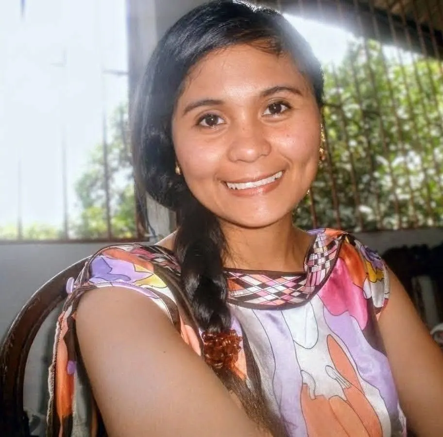
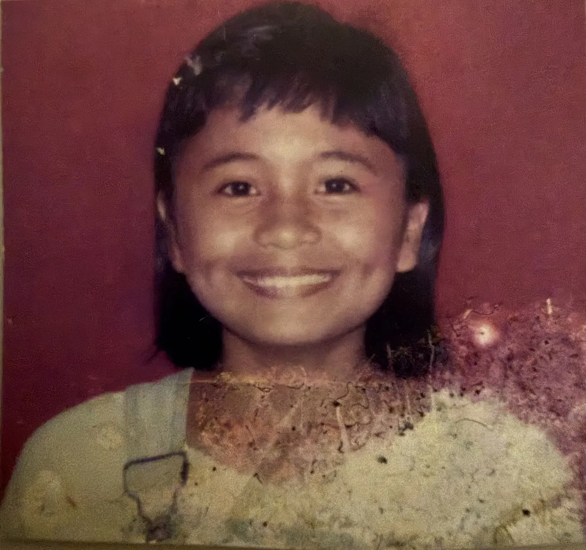
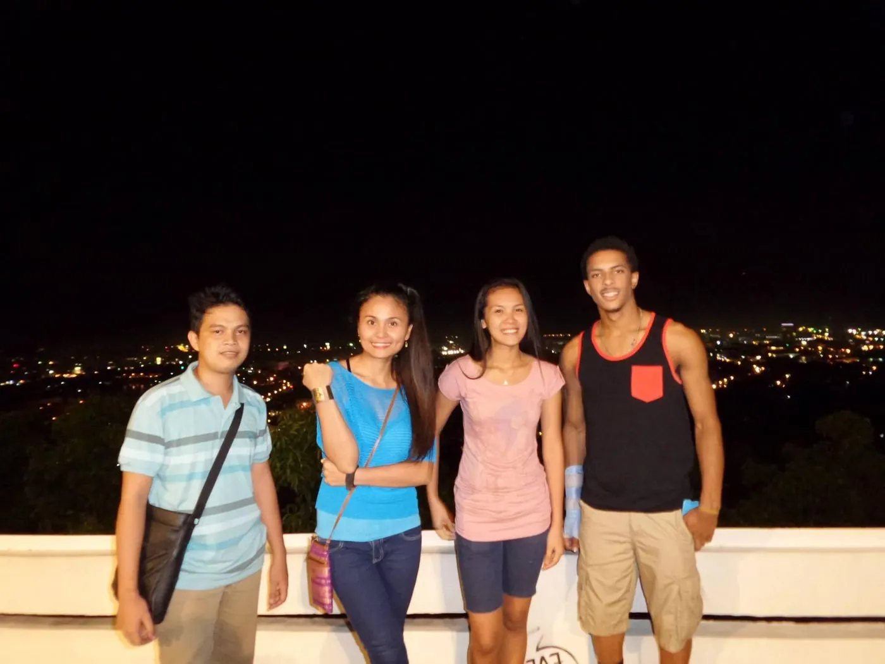
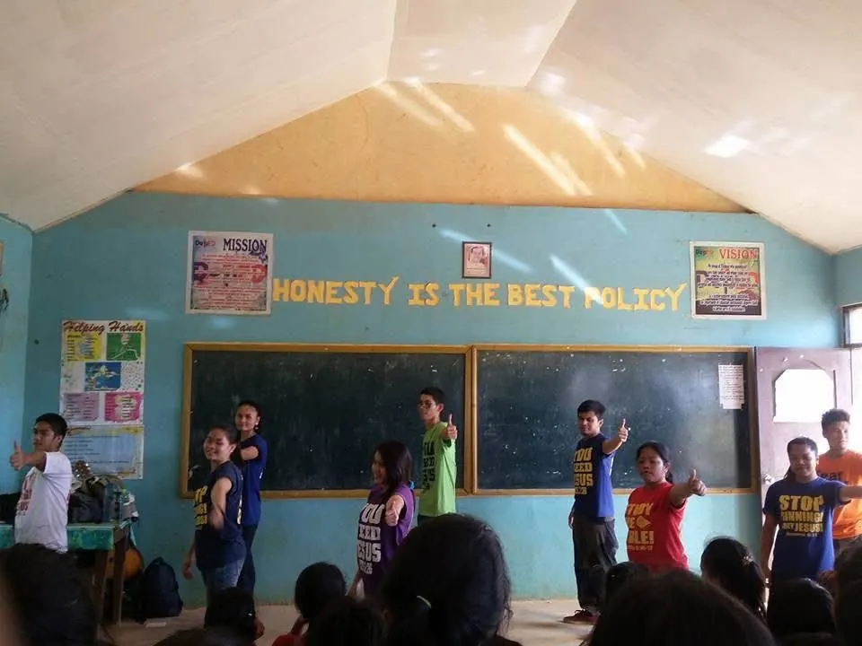
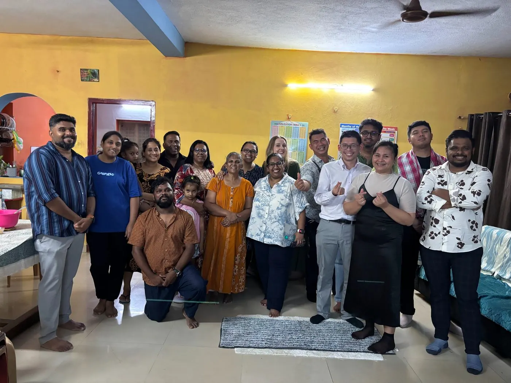
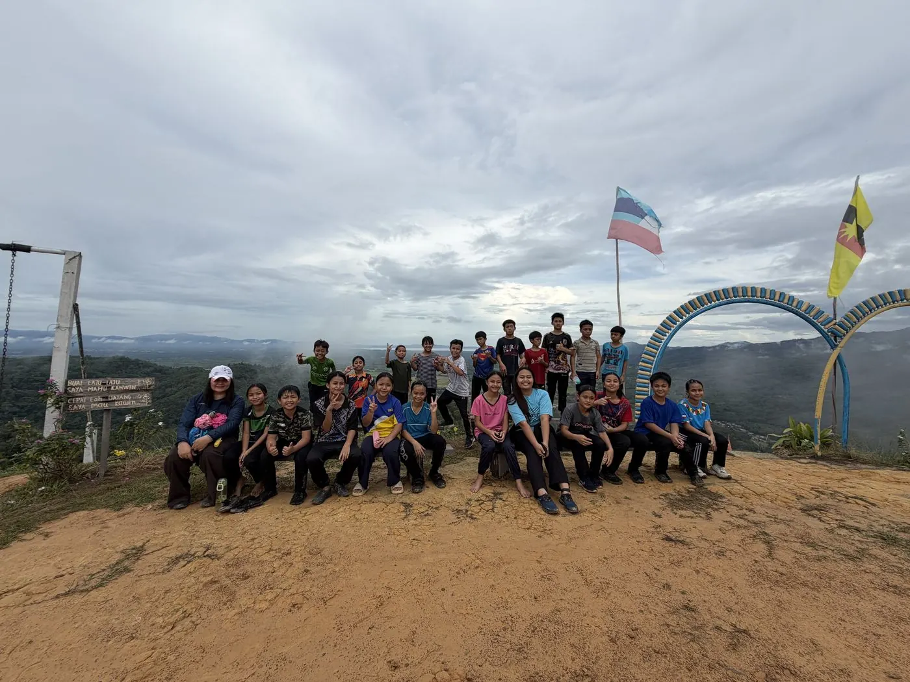
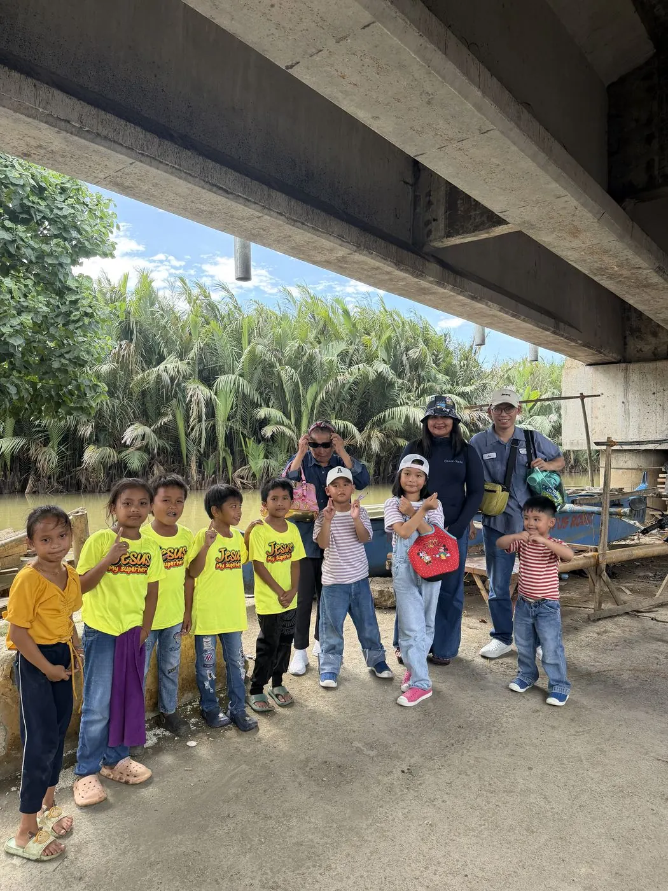
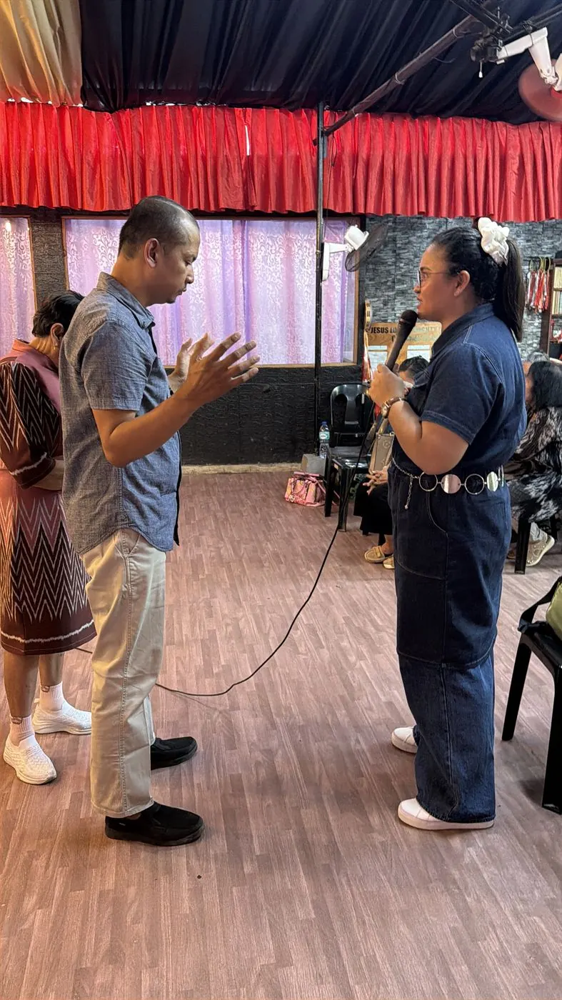

Called
to Go.Ministry
Called to Go Ministry is the ministry of Christine Cabason, a Christian preacher, worship leader and missionary based in Johor Bahru, Malaysia, serving churches and communities at home and abroad. From singing backup in church as a child to preaching, praying and serving across churches, streets, prisons and mission fields, this is her story of saying yes to God's call.
Invite Christine to minister
Based in Johor Bahru, Malaysia, Christine serves churches, fellowships and Christian groups locally and abroad, subject to availability. If you are looking for someone to preach, lead worship, pray with your people or share her testimony, get in touch to talk about an invitation.
- Preaching
- Worship leading
- Prayer ministry
- Evangelism
- Children's ministry
- Leadership encouragement
About Called to Go Ministry
What is Called to Go Ministry?
Called to Go Ministry is the ministry of Christine Grace Masiba Cabason, a Christian preacher, worship leader and missionary based in Johor Bahru, Malaysia. It shares her story, her mission work in the Philippines, Malaysia, Singapore and India, and her book Called to Go.
Where is Called to Go Ministry based?
In Johor Bahru, Johor, Malaysia. Christine serves churches, fellowships and Christian groups locally and abroad.
Can I invite Christine to preach or lead worship at my church?
Yes. Christine accepts invitations to preach, lead worship, pray and share her testimony, subject to availability. Send a message on WhatsApp to +60 11-2890 9055.
Does Christine offer prophetic prayer?
Yes. You can ask for a prophetic word by message, pray with her online, or meet face to face in Johor Bahru. See Need a word from God?
How can I support Called to Go Ministry?
Pray for the work ahead, give through PayPal or bank transfer on the Give page, or buy Christine's book Called to Go.
Worship first, compassion next, obedience when it counted.

Some ministry stories begin on a stage. Christine's began in a church, in a family, and in small acts of courage that happened long before anyone was watching. As a child, she was already learning to stand among worshippers and sing — not to be noticed, but to help point hearts toward God.
That pattern never really changed. Over the years it has carried her from church music ministry into reaching teenagers other people avoided, from campus outreach into the slums and a landfill on the edge of a city, from months of formal missionary training into prisons, city streets, and an indigenous community far from home.
Then came nine quieter years — raising children, largely out of the public eye. Ministry stories can misread a season like that as a pause. It wasn't. It was formation. When the door opened again in 2025, she walked back through it with the same willingness she had as a girl, and more life behind her to bring to it.
Her ministry has never been limited to one microphone or one kind of person. It has included children, students, people living in poverty, teenagers, church leaders, prisoners, police officers, and strangers waiting at a bus stop. In each setting her response has been much the same: listen, pray, speak about Jesus, and serve with whatever is in her hands.
Gifts developed over years, not overnight.
Preaching
Personal, biblical, and practical messages centred on Jesus, salvation, and a call to return to faith — shaped by a life that has actually walked what it preaches.
Prophetic Prayer
Personal, unhurried prayer for individuals — offered as encouragement and intercession, grounded in Scripture rather than performance.
Bold Evangelism
Comfortable starting a conversation with a total stranger — on a campus, a street corner, or beside a bus stop — with warmth rather than pressure.
Worship & Singing
From backup singer at church as a girl to leading worship before large crowds — music that gathers people and opens hearts.
Children's Ministry
Song, play, storytelling, and prayer for children in slums, landfills, hostels, and feeding programmes — dignity offered through attention.
Leadership Encouragement
Prayer and pastoral care for pastors, elders, and police officers — people who usually give strength to others, and rarely get to receive it.
Need a word from God?
Whether you are facing a decision, waiting on a promise, walking through a hard season or simply longing to hear from the Lord, you can ask Christine for prayer or for a prophetic word. She listens first, prays over you, and shares what she senses from God, always tested against Scripture.
- Direction and decisions
- Encouragement
- Family and relationships
- Healing and breakthrough
- Calling and ministry
How it works
- Message Christine on WhatsApp with a button below, and say briefly what you would like prayer or a word about.
- Agree a time that suits you both, online or in person. For a prophetic word by message, she replies once she has prayed.
- Meet and pray. Come as you are: no preparation is needed, and you can bring a Bible or a notebook if you like.
Prophetic prayer
A short clip of Christine praying over someone: personal, unhurried, and grounded in Scripture.
Based in Johor Bahru, Malaysia. Churches and groups who would like her to minister can get in touch on WhatsApp.
The journey so far.
Ministry rarely moves in a straight line. Here's the shape of it, from the earliest church memories to the most recent mission trips. The early years come from memory rather than a camera — the photo slots start where the recent missions do.
The First Song
Began serving as a backup singer in church — the earliest root of a lifelong pattern: worship first.

Reaching the Teenagers Others Avoided
Self-initiated outreach to teenagers on the margins, followed by years of Friday youth ministry.
SMCI, Cagayan de Oro
Helped pioneer a campus ministry group, taking short Gospel messages into classrooms across a city.

YWAM Gusa
Translated for foreign missionaries, and served an underserved community and a city landfill with food, prayer, and children's church.
YWAM Antipolo DTS
Discipleship training followed by outreach in Tacloban, the Umayamnon tribe in Bukidnon, Leyte Provincial Jail in Kauswaga, Palo, and the streets of Metro Manila.

Nine Years of Motherhood
A season of raising children — not a pause in the calling, but a ministry in itself: serving God by raising her family as a devoted, dedicated mother.
Sent Again
Preaching, singing, and prophetic prayer over pastors and leaders in Chennai, alongside Calvary Community Church Johor Bahru — plus a quiet street-side moment praying with an elderly woman waiting for her grandchild.

Ushering, Worship & Prayer
Welcomed crowds as an usher, then prayed for the sick, discouraged, and weary — several later shared testimonies of healing and relief.
Open-Air Evangelism
Bold, public conversations about faith at Danga Bay and Merdeka Square, carried out with courage and cultural care.
The Children's Hostel
Singing, play, worship, and prayer for children living away from remote mountain homes just to attend school.

Police, Pastors & a Feeding Programme
Prophetic prayer and encouragement for police officers, a children's feeding programme in an underserved community, and prayer ministry for a room full of pastors and elders.


This timeline will keep growing as more of the story is gathered and confirmed — dates and details here reflect what's documented so far.
The next yes.
The missions of 2025 and 2026 weren't an ending — they were a renewed beginning. Here's what's forming for what comes next.
Future missions will keep going wherever a door opens — through church ministry, children's outreach, evangelism, prayer, worship, leadership encouragement, and practical care for communities in need.
Every trip takes real preparation: trusted local partnerships, honest budgets, and covering, from churches and leaders who know the ground. This page will be updated with specific destinations and dates as soon as the next trip is confirmed.
No trip currently scheduled
Right now, ministry continues closer to home through local church life, prayer, and the relationships built on past trips. No international mission is booked at the moment, but this page will be the first to update the moment a next trip is confirmed.
Prayer points for what's ahead.
- 01
Close to Jesus
That she remains close to Jesus in every season, public or hidden.
- 02
Wisdom & accountability
Wisdom in choosing mission opportunities, with strong accountability through local churches and leaders.
- 03
Bold and gentle
Spiritual boldness joined with gentleness and cultural sensitivity.
- 04
Family & protection
Her marriage, children, health, finances, and protection while travelling.
- 05
The people she'll serve
The people and communities she'll serve next — children far from home, students, families in poverty, pastors, and public servants.
- 06
Lasting fruit
That every mission strengthens local churches and leads to lasting discipleship, not just a moment of inspiration.
“The prayer of a righteous person is powerful and effective.” James 5:16
Praying for Christine regularly? Message her and she will send you her latest prayer needs and answers to prayer.
Get her prayer updates Need prayer yourself? Request prophetic prayer →Books & eBooks
Every title from the ministry. Tap a book to see the details and how to get a copy. All proceeds from the book go to Christine.
Copyright and personal use
© 2026 Christine Grace Masiba Cabason. All rights reserved.
The book Called to Go and the original words, photos and videos on this website belong to Christine Grace Masiba Cabason and are protected by copyright. Please don’t copy, redistribute, republish, upload or resell them without her permission, except where the law allows (for example, quoting a short passage with credit).
When you buy the eBook, it is for your own personal reading. Please don’t forward the file, post it online or share it in group chats. If a friend would like to read it, send them to this page instead: every copy bought supports Christine’s ministry.
To ask about quoting the book, using a photo or anything else, email adamteokokwei@gmail.com or message WhatsApp +60 11-2890 9055.
Ministry runs on more than good intentions.
Travel, accommodation, food, materials, translation, and children's programmes all carry real costs. Choose where your gift goes, then give online or by bank transfer.
Choose where your gift goes
Give online or by bank transfer
Give via PayPal
Giving to: Support ChristineQuick, secure, and works from anywhere.
Pay with PayPalOpens PayPal to send directly — or copy the email below to send manually in the app.
Bank Transfer
Giving to: Support ChristineFor those who prefer a direct transfer.
Account Number: 0040 4962 8010
Account Holder: Christine Grace Masiba Cabason
Please put CHRISTINE as the transfer reference so your gift goes to the right place.
Send us your receipt
Where the mission fund goes
Gifts to the Mission Fund are kept apart from personal support. After each trip we post one total for what it cost, and what is left for the next mission.
Pray, invite, share.
Pray
For wisdom, protection, open doors, and lasting discipleship in every place she serves.
Prayer updatesInvite
Churches and groups can invite her to preach, lead worship, or minister under local leadership.
Johor Bahru, Malaysia Send an invitationShare
Pass along her story and prayer needs. Sharing this page is its own kind of ministry.
Every mission trip is reported back with a clear budget and is carried out under the oversight of Calvary Community Church, JB. If you'd rather give in person or ask a question first, use the contact details below.